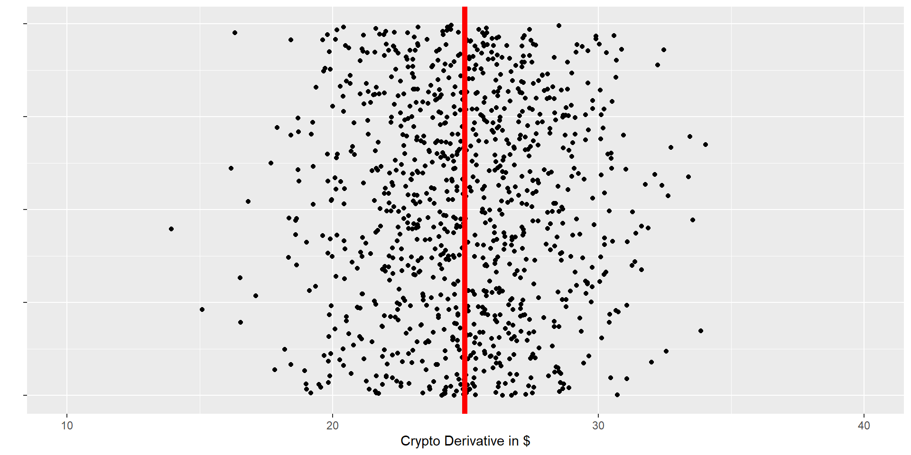
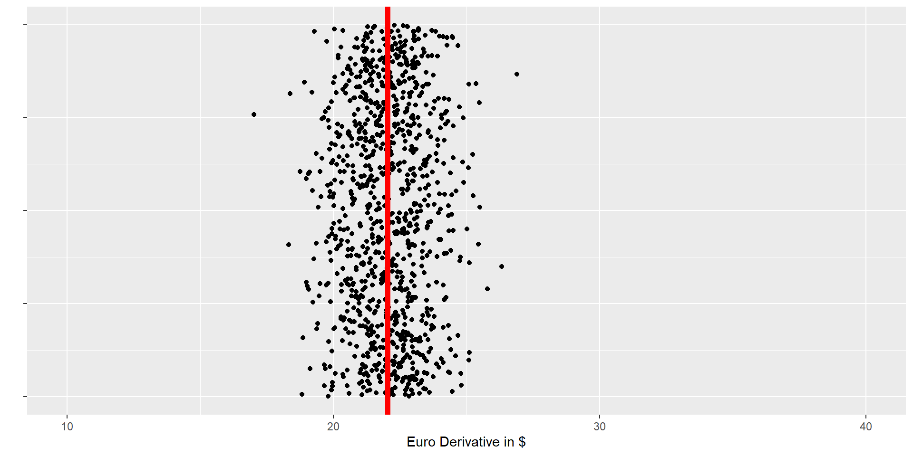
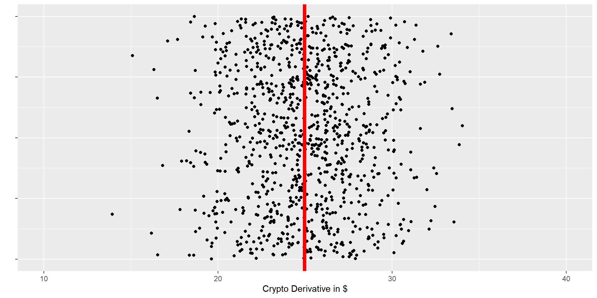
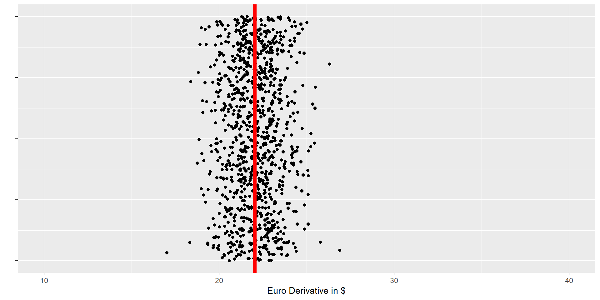

You will review the concept of Range, Absolute Deviation, Variance, and Standard Deviation to measure the spread of a variable.
You will review histogram diagrams
You will review the concept of Standard Deviation to measure the spread of a variable in connection with the Normal Distribution.
You will use the Normal Distribution to predict individual variables.
Some Questions to Introduce Center and Spread
Who runs faster, men or women?
Is this true for all men and women?
Who is taller, men or women?
Is this true for all men and women?
What is it the average temperature in Michigan/Coastal California?
Why is the climate different in the two states?
Which stock shows higher or lower volatility Procter & Gamble or Nvidia?
Why is that?
Why is it important?
How to measure Center and Spread
(1,000 synthetic observations each)


How to measure Center and Spread
(1,000 synthetic observations each)


\(Range=x_{max}-x_{min}\)
\(AbsDev=\sum_{i=1}^{1000}|x_i-\overline {x}|\)
\(Var=\sum_{i=1}^{1000}(x_i-\overline {x})^2\)
\(Std=\sqrt{Var}\)
Spread Crypto vs. Euro derivatives:
Range: 20.0938679 vs. 9.88387
MAD: 2.1022915 vs 0.8954912
Var: 9.7102717 vs 1.7466041
Std: 3.1161309 vs 1.3215915
Measuring Female Height Spread for a Small Sample
Here is a Hint:
1. Subtract the mean from the column DataSample$Height.
2. Square each element in the Deviation column. Use Deviation^2
3. The variance is the sum of the column DeviationSq divided by the sample size minus one.
4. The Standard Deviation is the square root of the Variance
Empirical Rule, also known as the \(68-95-99.7\) rule.
0.95 Confidence Interval: \(Mean \pm 1.96 \cdot StdDev\) In this example \(230.5 - 50 \cdot 1.96= 132.5\) and \(230.5 + 50\cdot 1.96= 328.5\) 95% of all 45 - 54 year women have a Cholesterol level higher than 182.5 and lower than 378.5.
Synthetic Data for 10,000 Women (45 - 54 years)
Histogram with Relative Frequencies as Column Area
Try column just right of mean: \(0.0068\cdot 50=0.34\)
Try changing the BinWidth for TeachHistDensity() and TeachHistRelFreq()
Synthetic Data for 10,000 Women (45 - 54 years)
Histogram with Relative Frequencies as Column Area and Normal Curve
Normal Curve
Most values are in the center.
Some are larger or smaller than the center.
Few are a lot larger or smaller than the center.
Very few are extremely large or small.
The distribution is symmetric around the mean, leading to a bell curve.
\[
Density = \frac{1}{\sqrt{2\pi\sigma^2}} e^{-\frac{(x - \mu)^2}{2\sigma^2}}
\]
where: \(\mu\) is the mean and \(\sigma\) is the standard deviation
Frequentist Statistics
Frequentist Statistics uses Relative Frequency to estimate Probability
Histogram with Relative Frequencies as Column Area and Normal Curve
pnorm(x, mean=?, sd=?) calculates the probability of getting a value smaller than x.
pnorm4(x, mean=?, sd=?) does the same but works with the same numbers than your Z-table in the Hawkes textbook and plots a histogram (no warranty!)
Try: What is the probability of having a value of less than 200 when the mean is 230.5 and the standard deviation is 50.
The pnorm() and the pnorm4() commands have four arguments, the analyzed value, the mean, and the standard deviation (in that order).
Here is the Solution:
source("https://econ.lange-analytics.com/RScripts/ZTable4Digits.R")
cat("Probability for x<200:", pnorm(200,230.5,50))
pnorm4(200,230.5,50)
source("https://econ.lange-analytics.com/RScripts/ZTable4Digits.R")cat("Probability for x<200:", pnorm(200,230.5,50))pnorm4(200,230.5,50)
Histogram with Relative Frequencies as Column Area and Normal Curve
To use the table from the Hawkes textbook, you need to know, how many standard deviation \(200\) is from the mean because this is the Z-Value (mean=\(230.5\), StdDev=\(50\)).
Here is a Hint:
To calculate how far 200 is from the mean, subtract the mean from 200.
To find out how many standard deviations the distance above is (z-value), divide by the standard deviation.
\[z=\frac{x-Mean}{StdDev}\]
Here is the Solution:
DistInchesFromMean= 200 - 230.5
cat("Distance from Mean in Inches:", DistInchesFromMean)
cat("Distance from Mean in Std. Dev:", DistInchesFromMean/50)
DistInchesFromMean=200-230.5cat("Distance from Mean in Inches:", DistInchesFromMean)cat("Distance from Mean in Std. Dev:", DistInchesFromMean/50)
Histogram with Relative Frequencies as Column Area and Normal Curve
pnorm(x, mean=?, sd=?) calculates the probability of getting a value smaller than x. Try: What is the probability of having a value of greater than 360 when the mean is 230.5 and the standard deviation is 50
Histogram with Relative Frequencies as Column Area and Normal Curve
Histogram with Relative Frequencies as Column Area and Normal Curve
qnorm(x, mean=?, sd=?) calculates the value that is not exceeded by x percent of the women Try: What is the value that is not exceeded by 95% of women?
Histogram with Relative Frequencies as Column Area and Normal Curve
qnorm(x, mean=?, sd=?) calculates the value that is not exceeded by x percent of the women Try: Between which values fall 95% of the women (95% confidence interval)
Applications/Exercise
Mean of male height in the U.S. is \(70\) inches with a Standard Deviation of 3 inches (click for source:).
What is the probability to randomly meeting an U.S. male with a height smaller than 50 inches assuming height is normal distributed
What is the probability to randomly meeting an U.S. male with a height bigger than 80 inches assuming height is normal distributed
What is the probability to randomly meeting an U.S. male with a height bigger than 120 inches assuming height is normal distributed
What is the probability to randomly meeting an U.S. male with a height between 67 and 73 inches assuming height is normal distributed
What is the height range that 95% all men fall in
Research about Groups (Samples) is Moe Important than Individuals
A group of 50 men are taking a class at Cal Poly. The average height in this class is 72 inches (remember the Mean of all men is \(70\) inches and the Standard Deviation is \(3\) inches.
The mean of the sample is different than the mean of all men. This should not come as surprise. If we had sampled another class, we would have measured a different mean.
So, by how much would the Sample Mean spread, if we considered more courses? (Note, the spread of a sample mean is called Standard Error)
Standard Error is less than the Standard Deviation of the population (mean of men height). Reason: In a group, tall and small men partially cancel out.
The Standard Error is smaller when the sample size (\(N\)) is bigger.
The Standard Error is bigger when the Standard Deviation of the population is bigger.
\[SE=\frac{StdDev}{\sqrt{N}}\]
Back to the Male Students at Cal Poly
A group of 50 men are taking a class at Cal Poly. The average height in this class is 72 inches (remember the Mean of all men is \(70\) inches and the Standard Deviation is \(3\) inches).
Sample Mean: \(\bar x =72\)
Standard Error: \(SE=\frac{Std}{\sqrt{N}}=\frac{3}{\sqrt{50}}=0.4242641\)
The relative frequency of a group of 50 men (and thus the probability) having a mean of 72 inches or taller is 1.214236e-06
Another Application: Mean and Standard Deviation not Known
Our daily sales data for a new product are normally distributed. We do not know the Mean nor the Standard Deviation.
However, we have data from the last 36 days to estimate the Mean and Standard Deviation based on our sample data.
Sample Size:\(N=36\)
Estimated Mean in ($ 1,000):\(\bar x= 90\)
Estimated Standard Deviation:\(StdDev= 12\)
Estimated Standard Error:\(SE= \frac{12}{\sqrt{36}}=2\)
t-Distribution vs. Normal Distribution
If the Standard Deviation is not known and is estimated from the sample: Normal Distribution changes to a t-Distribution
However, Normal Distribution and t-Distribution are very similar with the t-Distribution having fatter tails.
t-Distribution vs. Normal Distribution (\(N=10\))
t-Distribution vs. Normal Distribution (\(N=36\))
Calculating the 95% Confidence Interval for Mean
Sample Size:\(N=36\)Estimated Mean in ($ 1,000):\(\bar x= 90\)
Estimated Standard Deviation:\(StdDev= 12\)
Estimated Standard Error:\(SE= \frac{12}{\sqrt{36}}=2\)
Confidence Interval based on qnorm():
95% Confidence Interval: 86.08007 93.91993
Confidence Interval based on t.test():
One Sample t-test
data: DataSales$Sales
t = 43.389, df = 35, p-value < 2.2e-16
alternative hypothesis: true mean is not equal to 0
95 percent confidence interval:
87.21815 95.78037
sample estimates:
mean of x
91.49926
Hypothesis Test
H0: Before the sample of 36 days was taken, it was believed that the Mean for sales is 85?
A (Research): Research of the 36 days suggests that the Mean is different \((\bar x=90)\).
Is the mean from the sample just by accident different from 80 or is there more behind it? The latter would mean the H0 is likely wrong.